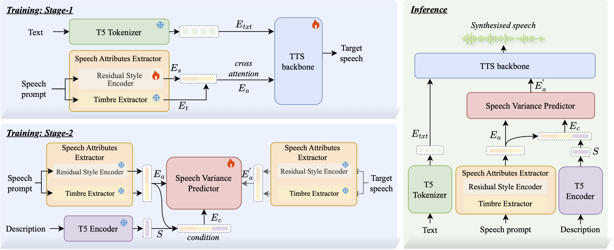

Expressive and controllable text-to-speech (TTS) synthesis has become a central focus in the field. However, existing controllable TTS methods that rely on either reference speech or text descriptions often lack flexibility and fail to achieve precise control. Recent attempts at joint control operate in a pseudo-collaborative manner: reference speech typically provides only timbre, while text descriptions crudely overwrite global style, resulting in functional segregation and underutilization of the complementary strengths of both modalities. To address these limitations, we propose FineCombo-TTS, a novel framework that fully integrates reference speech and natural language descriptions for flexible and precise controllable speech synthesis. FineCombo-TTS learns rich acoustic information from reference speech and enables precise attribute control—such as prosody, emotion, or timbre—through text descriptions. To avoid information leakage and structural redundancy associated with explicit disentanglement, we extract speech attributes representations from the reference speech using a pretrained FACodec timbre extractor and a residual style encoder. Furthermore, we introduce a Speech Variance Predictor based on Conditional Flow Matching (CFM), which supports both reference speech and text descriptions as input, enabling precise control over speech attributes without explicit disentanglement. To support the training of FineCombo-TTS, we construct and release FineEdit, a paired speech dataset specifically designed for precise speech attribute control, where the only differences between the source and target speech are described in the control annotations. Extensive experiments demonstrate that our approach bridges the gap between reference speech-based and text description-based control, achieving a truly unified and integrated solution for precise and flexible controllable TTS.
FineCombo-TTS is a novel framework that fully integrates reference speech and text descriptions to achieve flexible and precise control in text-to-speech synthesis.
| Reference Speech | Content | Description | Generated Speech |
|---|---|---|---|
| Lay a marble on the table and do nothing eighteen hours of the day but change that marble from one point to another and back again, and you will go insane if you continue long enough. | Change the prosody, lower the volume, lower the pitch. | ||
| The ideal speaker makes his big words stand out like mountain peaks; his unimportant words are submerged like stream beds. | Change the prosody, slow down the speech rate, lower the pitch. | ||
| I feel shooken up dreadful, he's so awful strong; but I'm not very hurt, only I'm sorry, and I've been telling my Captain about it, and asking Him to forgive me. | Change the prosody, raise the volume. | ||
| "Horrid, father" whispered Ned, as if he felt that Indians might be listening. | Change the prosody, speed up the speech rate, raise the volume. | ||
| They were at breakfast, and everybody in the vicinity turned and stared at their table. | Change the prosody, lower the volume, raise the pitch. |
| Reference Speech | Content | Description | Generated Speech |
|---|---|---|---|
| No admittance except on party business. | Change the style, speak with a sad emotion. | ||
| I'm sure your friends can wait! | Change the style, speak with a happy emotion. | ||
| No, I burst the balloon! | Change the style, speak with a angry emotion. | ||
| But what about this thing, sticky! | Change the style, speak with a surprised emotion. | ||
| I've just shot a stag. | Change the style, speak with a angry emotion. |
| Reference Speech | Content | Description | Generated Speech |
|---|---|---|---|
| Chapter ten a warm welcome. | Change the timbre to a feminine, clear, slightly muffled, middle-aged, slightly thin, slightly elegant voice. | ||
| Her shoes were like fishes. | Change the timbre to a very masculine, deep, very thick, very mature, slightly old, cool voice. | ||
| Mister share man, I move for a division. | Change the timbre to a feminine, very young, light, clear, slightly cute voice. | ||
| I do not think it is wise to take her into our confidence. | Change the timbre, speak as a feminine,adult-like,tensed,powerful,slightly bright,clear,fluent,intellectual,elegant,slightly sexy,lively,slightly strict,sharp. | ||
| "My dear uncle," I said, whilst hot tears trickled down my face. | Change the timbre, speak as a adult man, slightly weak,bright,soft. |
| Content | Description | Generated Speech |
|---|---|---|
| The horse itself, in the foreground of the design, stood motionless and statue like-while farther back, its discomfited rider perished by the dagger of a Metzengerstein. | Generate a voice, Speaking slowly, she infused her words with abundant energy. | |
| At the unexpected outcry in the rear the Raturans halted, and held a hasty council of war. | Generate a voice, With diminished energy, the man speaks rapidly and in a deep pitch. | |
| "Washington ought to send troops and provisions for the forts at once!" replied mr Fulton. | Generate a voice, Speaking with fervor, her voice maintains a high pitch. | |
| When it was fixed on, the boat was launched and the voyage began. | Generate a voice, A man's low-pitched voice carries normal energy as he speaks rapidly. | |
| It is a lovely story that follows, full of marvel, as how should it not be? | Generate a voice, The man maintains a regular pitch while speaking rapidly with an energetic delivery. |